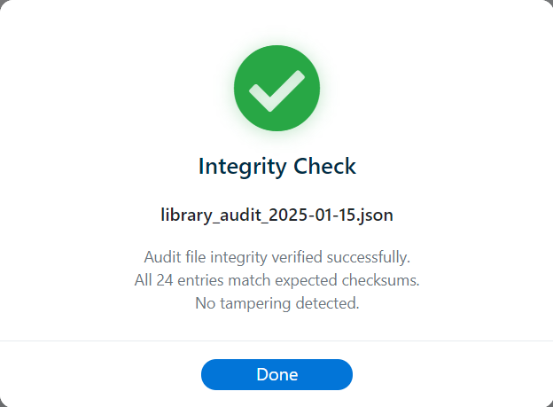

Overview
The Library Audit Log generates a comprehensive, tamper-evident report of every library installed in the VENUS environment. The report covers both user-installed libraries and Hamilton system libraries, recording their metadata, file integrity status, and cryptographic hashes at the moment the audit is run.
Each audit log is automatically signed with an embedded HMAC-SHA256 integrity signature so that any subsequent modification to the file can be detected.
Running an Audit
To generate an audit log:
- Click the overflow menu () in the toolbar
- Select Run Library Audit
- The audit runs immediately and saves the log file automatically
- A success confirmation dialog is displayed with the saved file path

Save Location
Audit logs are saved to a fixed directory to ensure consistency and prevent user modification of the file name or path:
C:\Program Files (x86)\Hamilton\Logfiles\Library Audit Logs\
The file name follows the pattern libraryAuditLog_<unix_timestamp>.txt, where the timestamp is the number of seconds since January 1, 1970 (UTC). For example:
libraryAuditLog_1740422400.txt
The directory is created automatically on the first audit if it does not already exist.
Audit Log Contents
The audit log is a plain-text file divided into several sections:
Header
Contains the generation timestamp, computer name, username, operating system, and the configured VENUS Library and Methods directory paths.
Summary
A count of active installed libraries, deleted (soft-deleted) libraries, system libraries, and the total number of libraries audited.
Installed (User) Libraries
For each user-installed library, the following is recorded:
- Library name, ID, version, author, organization, and description
- VENUS compatibility, tags, status (Active or Deleted)
- Created date, installed date, and deleted date (if applicable)
- Source package path, install path, and demo path
- COM DLLs and COM warning status
- Integrity status — PASS, FAIL, or WARNING — with detailed error and warning messages
- Library files with existence check, stored SHA-256 hash, current SHA-256 hash, and hash comparison (MATCH / MISMATCH)
- Demo files with existence check
- Public functions list
System Libraries (Hamilton Base)
For each Hamilton system library, the following is recorded:
- Display name, canonical name, ID, author, organization
- First seen / last seen timestamps, source root, primary definition status
- Resource types
- Integrity status — verified using the Hamilton metadata footer (
$$valid$$/$$checksum$$) compared against the stored baseline - Discovered files with existence check, stored and current footer values, and match status
Footer
Total entry count and the audit completion timestamp.
Integrity Signature
The final line of every audit log contains an embedded HMAC-SHA256 integrity signature:
$$INTEGRITY_SIGNATURE$$ e3b0c44298fc1c149afbf4c8996fb924...
This signature is computed over the entire body of the audit log (everything above the signature line) using a keyed HMAC with SHA-256. The key is embedded within the application.
How Signing Works
- The full audit log body is assembled in memory (header through footer)
- An HMAC-SHA256 digest is computed over the body text
- The resulting 64-character hex signature is appended as the last line, prefixed with
$$INTEGRITY_SIGNATURE$$ - The complete file (body + signature line) is written to disk
Because the signature is derived from the file contents, any change to the log — even a single character — will cause the signature to no longer match, making tampering detectable.
Checking an Audit File
To verify that a previously saved audit log has not been modified:
- Click the overflow menu () in the toolbar
- Select Check Audit File
- Browse to and select the
.txtaudit log file - A result dialog is displayed indicating whether the file passed or failed the integrity check
Verification Results
| Result | Icon | Meaning |
|---|---|---|
| Integrity Check Passed | ✔ | The HMAC signature matches - the file has not been modified since it was generated |
| Integrity Check Failed | ✘ | The HMAC signature does not match - the file contents have been altered |
| No Signature Found | ✘ | The file does not contain an $$INTEGRITY_SIGNATURE$$ line - it may not be a signed audit log, or the signature was removed |

When a signature mismatch is detected, both the stored signature and the computed signature are displayed so the discrepancy can be documented.
Practical Recommendations
- Run a library audit after each library import, deletion, or rollback to maintain a traceable audit trail
- Run an audit as part of instrument qualification (IQ/OQ/PQ) to document the exact library state at the time of qualification
- Use Check Audit File whenever you retrieve a historical audit log to confirm it has not been altered
- Do not open or edit audit log files in a text editor before verification - even invisible changes (encoding, line endings) will invalidate the signature
- Audit logs are stored alongside VENUS run logs in
C:\Program Files (x86)\Hamilton\Logfiles\Library Audit Logs\for centralized log management - Review the Audit Trail (see below) to trace the full history of who packaged, imported, deleted, or rolled back libraries and from which machine
Audit Trail
In addition to the on-demand point-in-time audit log, Venus Library Manager maintains a persistent audit trail that automatically records every lifecycle event as it occurs. This trail provides a chronological record of all library operations across the lifetime of the installation.
When Events Are Recorded
An audit trail entry is appended automatically whenever any of the following operations completes (in both the GUI and the CLI):
- Package Created — A new
.hxlibpkgpackage is built - Library Imported — A single
.hxlibpkgis installed - Archive Imported — A
.hxlibarch(multi-library archive) is installed - Library Deleted — An installed library is removed
- Library Rollback — A library is rolled back to a previously cached version
- System Library Integrity Check — A system library integrity verification was performed via the Verify & Repair tool
What Each Entry Contains
Every audit trail entry records the following environmental and contextual data:
| Field | Description |
|---|---|
| event | The event type (e.g. package_created, library_imported, archive_imported, library_deleted, library_rollback, syslib_integrity_check) |
| timestamp | ISO 8601 date and time when the event occurred |
| username | The Windows username of the user who performed the action |
| windows_version | The Windows OS version string (e.g. Windows_NT 10.0.19045 (x64)) |
| venus_version | The installed Hamilton VENUS software version (e.g. 6.2.2.4006) as detected from the Windows registry, or N/A if not found |
| hostname | The computer name where the action was performed |
| details | Event-specific details such as the library name, version, author, source file path, install path, and other relevant metadata |
Destructive Action Audit Fields
When enabled in GUI Settings, destructive or potentially destructive actions (delete, rollback, upgrade/overwrite, archive overwrite decisions) can require operator-entered audit fields. These values are written to the event details object:
| Field | Description |
|---|---|
| action_comment | Operator-supplied justification/comment captured at confirmation time |
| action_signature | Operator signature text (typically first and last name) |
Validation rules:
- Comment: At least 26 characters, includes a space, includes more than 10 letters, and includes at least one sequence of 2 or more letters.
- Signature: Longer than 4 characters and includes at least one space.
- Fields are shown and required only when the corresponding Settings toggles are enabled.
Storage Location
The audit trail is saved as audit_trail.json in the user data directory:
<User Data Directory>\audit_trail.json
By default, this is:
C:\Program Files (x86)\Hamilton\Library\VenusLibraryManager\audit_trail.json
The audit trail file is stored with other user data (installed library records, groups, etc.) and is never written to the application's own directory. This ensures the application remains portable and that all user-specific data is kept in the configured user data location.
Traceability
The audit trail enables full traceability across distributed workflows. For example, when a library is packaged on one workstation and imported on another:
- The packaging event records the packager's Windows username, Windows version, VENUS version, and hostname
- The import event on the receiving workstation records the importer's Windows username, Windows version, VENUS version, and hostname
Together, these entries provide a complete chain of custody showing who created the package, on what system, and who installed it, on what system.
Visibility
The audit trail can be viewed directly within the application through the Event History modal, accessible from Overflow Menu → History. The Event History modal provides a searchable, filterable view of all recorded events with category/user filters and CSV export capability. See GUI Overview — Event History for full details.
The raw data can also be inspected directly in audit_trail.json in the user data directory.
Related Topics
- Integrity Verification — How file integrity is tracked for installed and system libraries
- CLI: generate-syslib-hashes — Generate the system library baseline used in audits
- CLI: verify-syslib-hashes — Verify system libraries against baseline from the command line